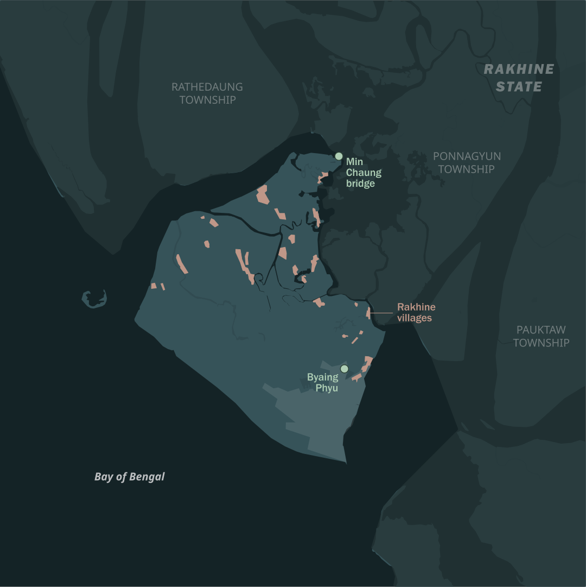

Since the start of the year, the Arakan Army has picked up the pace of its attacks, including around Sittwe. The group has consistently said it intends to seize control of the rest of Rakhine; during unsuccessful China-brokered ceasefire talks in May 2024, it demanded the military quit the state in exchange for a deal. But capturing Sittwe will be a tougher challenge than anything the Arakan Army has accomplished thus far. The town is home to an estimated 250,000 people, both Rakhine and Rohingya, spread across the urban area, surrounding villages and Rohingya displacement camps. The capital is essentially an island, bounded on the three sides by major water bodies; the only road access is via a bridge over Min Chaung, a creek that marks the border between military and Arakan Army control.
While highly defensible, Sittwe is also very isolated. Most food and other essentials arrive by plane or boat from Yangon, but it’s rarely enough for such a large town. Accordingly, prices have skyrocketed over the past two years: a December 2025 survey found Sittwe had the most expensive food basket in the country, around 50 per cent higher than the national average. There’s also little electricity or cooking fuel; residents now rely on charcoal or firewood, which is so scarce it is unaffordable to most. A Rohingya resident of a village on the outskirts of Sittwe said he and his neighbours have mostly reverted to bartering. “Everyone is struggling just to survive. To put it simply, it feels like we’ve reverted to an ancient era. We rarely leave our villages, we grow what we can raise, raise livestock, fish, and then we barter to get what we need”, said a 38-year-old Rohingya man.
While residents simply try to survive, the military has spent the past two years building up its defences. When the Arakan Army advanced into neighbouring Ponnagyun Township in February 2024, regime troops blew the bridge over Min Chaung to prevent them from reaching Sittwe. Fearful that the armed group could use Rakhine villages on the township’s fringes to infiltrate the capital, it soon began forcing residents to abandon their homes. One of the first villages to be targeted was Byaing Phyu, just a few kilometres from the city limits. Regime soldiers entered the community in late May 2024, apparently looking for Arakan Army supporters. After rounding up the residents, they reportedly massacred at least 50 people; the survivors were forced from their homes and have not been allowed to return. The junta denied allegations of mass killings, saying its forces were only carrying out a “peace and security” operation.

Elsewhere, the military gave residents a deadline of five days to leave their homes. Aware of the massacre at Byaing Phyu, they grudgingly complied; by the end of 2024, at least twenty villages had been abandoned, satellite images show, confirming local civil society and media reports. Residents were forced into urban Sittwe, where they have been staying in monasteries or with relatives. Some of those forced from their homes have since fled Sittwe for Arakan Army-controlled areas.


Some villages, such as Pa Lin Pyin on the township’s west coast, and old Kan Pyin to the east, were razed entirely and replaced with new security outposts – a chilling repeat of the military’s actions after driving Rohingya from their homes in northern Rakhine in 2017. In the remaining villages, the empty homes were looted and mostly demolished, the timber often sold for firewood. In February, the military even reportedly burned much of what remained in Thin Pone Dan, next to the army hospital, apparently out of concern that it could be used as a hideout by Arakan Army fighters.
After clearing the villages, the military set about fortifying the city’s outskirts. On the western, northern and eastern fringes of the town, it has built a network of trenches, fences and military outposts, some linked by newly built roads. In some cases, these fortifications have been constructed around the emptied villages, while in other areas they have been carved out of now-abandoned paddy fields. Security has also been upgraded across the dozen or so large military bases that Sittwe has long hosted, with the Regional Operations Command in the centre of the township now surrounded by concentric rings of fences and trenches. Numerous reports suggest the military has also laid mines in front of these defensive features (Myanmar is not a party to the the 1997 Ottawa Convention banning the laying of mines).
Close to what is now the front line with the Arakan Army, the military has also built several large military bases, linked by new roads and protected by several rows of fortifications. To man these new outposts the regime has been sending in batches of reinforcements by boat –many of them conscripts drafted into the military since February 2024, when it activated a longstanding military service law to replenish its ranks.
It is in this area that most of the recent fighting has been reported. In early January, Arakan Army commandos reportedly crossed Min Chaung and seized two military outposts near Kant Kaw Kyun and Thein Dan villages, although they do not appear to have held on to them. Further fighting was reported along a broader front in late February and early March, from the Shwe Min Gan port up to the northern shore of Sittwe Township, facing the Mayu River. The Arakan Army has also fired artillery into Sittwe; the military has responded by targeting Arakan Army positions in neighbouring Ponnagyun, Pauktaw and Rathedaung townships.
Sittwe Township is also home to a large Rohingya population, including around 120,000 who were displaced by communal conflict in 2012. For almost fifteen years now, they have lived in squalid camps interspersed between Rohingya villages southwest of the city, and are heavily dependent on international aid given restrictions on their freedom of movement. Although the military has not pushed Rohingya out of their villages, it has forcibly recruited and trained significant numbers of young Rohingya men to bolster its ranks in fighting against the Arakan Army. Because the military does not consider them citizens, the Rohingya recruits are not treated like regular conscripts: they are placed into militia units rather than the army. Many have complained of mistreatment at the hands of military officers, and in mid-January at least nineteen reportedly deserted from two regime outposts. The military has since detained as many as 50 Rohingya villagers, including village administrators and other local leaders, accusing them of links to the Arakan Army.
Rohingya told Crisis Group they fear a repeat of the communal violence that erupted in northern Rakhine State in 2024, after some Rohingya fought alongside the military against the Arakan Army. The ethnic armed group allegedly burned Rohingya villages in retaliation, and since taking control of northern Rakhine, it has been accused of carrying out numerous human rights violations against the Muslim minority. The Arakan Army denies the allegations, but one Rohingya man said the military was “feeding us to the wolves”. “We’re really worried ... if the Arakan Army really attacks Sittwe, [the military] will retreat into their battalions inside the city, and then the Arakan Army will kill us”, he told Crisis Group.
Whether the Arakan Army will expand its attacks on military positions in Sittwe to launch a major offensive is unclear. Given the military’s preparations for this scenario, a broader push would come at great cost, inflicting many casualties and immense destruction, while success is far from guaranteed. By demonstrating the weakness of the regime’s position through smaller, probing attacks, the Arakan Army could actually be trying to put itself in a stronger position for possible ceasefire talks. Prospects for a deal appear slim, however. Given how much territory it has lost, the military will not accept terms that freeze the conflict at the current front lines, and the Arakan Army is unlikely to cede territory willingly. China, which has some leverage over both sides and has facilitated past talks, is reluctant to intervene decisively. Beijing is confident that both the Arakan Army and the military will be careful to avoid damaging its infrastructure investments, and that whichever side ultimately prevails will accommodate its interests.
That said, it is possible that the Arakan Army’s recent forays are a prelude to a larger offensive aimed at seizing the town. Although this would be a gamble, the group has been preparing for this scenario for the last two years at least. Capturing the state capital would be a huge strategic and psychological victory over the regime, bringing the dream of an autonomous Rakhine state within reach. The town is an economic hub, home to a port that India built in order to improve connectivity with its northeastern states, and a gateway to Bangladesh. But victory would not just put the Arakan Army in a much stronger bargaining position with Naypyitaw, it would also provide a major boost for Myanmar’s broader resistance movement at the national level, at a time when the military has been gaining ground in some other areas of the country.